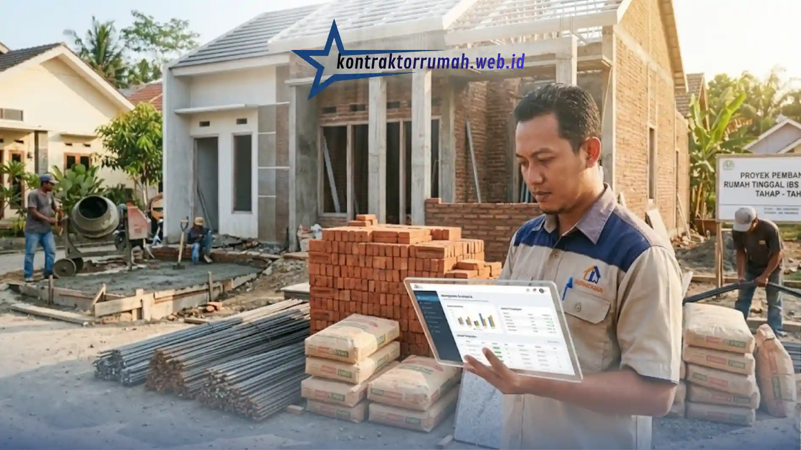

Harga borongan rumah per meter rata-rata berkisar antara Rp3.000.000 hingga Rp5.500.000, tergantung spesifikasi material, lokasi proyek, dan kompleksitas desain bangunan. Angka ini adalah estimasi pasar umum, sebaiknya dikonfirmasi ulang dengan beberapa kontraktor lokal karena harga bisa bergeser mengikuti harga material dan upah daerah masing-masing.
Poin Penting
- Sistem borongan mengikat pekerja dan pemilik dalam satu kesepakatan harga total.
- Ada pilihan borongan tenaga saja, atau borongan penuh dengan material bangunan.
- Kualitas bahan baku menjadi faktor penentu terbesar dalam variasi tarif per meter.
- Kontrak tertulis wajib dibuat untuk menghindari perselisihan spesifikasi di kemudian hari.
- Perhitungan berbasis luas bangunan memudahkan pemilik menyiapkan anggaran secara pasti.
Apa Itu Sistem Borongan Rumah Per Meter?
Sederhananya, sistem borongan rumah per meter adalah cara membayar jasa konstruksi berdasarkan luas bangunan dikalikan tarif per meter persegi yang sudah disepakati di awal.
Metode ini populer bagi orang yang tidak mau repot mengawasi belanja material setiap hari. Kontraktor atau pemborong mengambil alih tanggung jawab manajemen proyek, sementara pemilik rumah cukup menerima laporan progres sesuai jadwal yang disepakati. Kesepakatan biasanya mencakup durasi pengerjaan, spesifikasi teknis, dan masa garansi setelah bangunan selesai.
Bagi keluarga muda dan investor properti, kepastian anggaran sejak awal jadi daya tarik utama. Risiko kenaikan harga material selama masa kontrak umumnya sudah ditanggung pemborong, sesuai klausul yang disepakati di kontrak.
Berapa Kisaran Tarif Borongan Rumah Saat Ini?
Untuk spesifikasi standar-menengah, kisarannya ada di sekitar Rp3.000.000 per meter persegi; untuk bangunan premium bisa mencapai Rp5.500.000 atau lebih.
Harga ini bergerak mengikuti tren kenaikan harga material bangunan dan upah tenaga kerja dari waktu ke waktu, jadi patokan aman untuk perencanaan awal biasanya sedikit di atas harga pasaran termurah yang ditemukan, semacam ruang gerak untuk fluktuasi. Angka ini mencakup struktur dasar, dinding, atap, lantai standar, dan pengecatan awal.
Untuk material khusus seperti lantai granit ukuran besar, atap baja ringan kualitas tinggi, atau sistem rumah pintar terintegrasi, biaya borongan naik secara proporsional. Kepastian harga akhir baru bisa ditentukan setelah gambar kerja dan Rencana Anggaran Biaya (RAB) disepakati kedua belah pihak, sebelum peletakan batu pertama.
Faktor Apa Saja yang Membuat Harga Antar Kontraktor Berbeda?
Empat faktor utama biasanya menentukan: kualitas material, kerumitan desain arsitektur, lokasi geografis, dan reputasi atau legalitas pemborong.
Lokasi proyek sangat berpengaruh. Membangun di pusat kota dengan akses jalan lebar jauh lebih hemat secara logistik dibanding di area perbukitan dengan jalan sempit, karena itu menentukan jenis kendaraan pengangkut material yang bisa masuk, dan itu berdampak langsung ke biaya operasional pemborong.
Kerumitan fasad dan detail arsitektur juga menyumbang lonjakan biaya. Desain minimalis kotak butuh lebih sedikit waktu dan material dibanding desain klasik dengan banyak pilar, lengkungan, atau ornamen rumit. Pemborong berbadan hukum resmi biasanya mematok tarif sedikit lebih tinggi dibanding tukang borongan mandiri, tapi menawarkan keamanan legalitas dan garansi struktural yang lebih terjamin.

Transparansi RAB dan draf kontrak menjadi indikator kuat komitmen kontraktor sebelum menyepakati harga borongan rumah per meter.
Borongan Penuh vs Borongan Tenaga Saja: Apa Bedanya?
Borongan penuh mencakup material dan jasa pekerja sekaligus (sistem "turnkey"); borongan tenaga saja membebankan belanja material sepenuhnya ke pemilik rumah.
Pada borongan penuh, pemborong mengurus semuanya, dari pembelian besi, semen, pasir, sampai upah harian tukang. Cocok untuk orang sibuk yang tidak sempat survei harga ke berbagai toko bangunan.
Borongan tenaga saja memberi kebebasan penuh dalam memilih merek dan kualitas material, bisa berburu diskon keramik, memilih sendiri jenis kayu pintu, mengatur laju kedatangan barang. Kekurangannya, ini menyita banyak waktu dan tenaga; kalau material terlambat datang, pekerjaan tukang ikut terhenti sementara upah tetap berjalan atau jadwal harus disesuaikan.
Bagaimana Cara Memilih Kontraktor Borongan yang Bisa Dipercaya?
Verifikasi portofolio proyek sebelumnya, cek legalitas badan usaha, dan minta testimoni langsung dari klien terdahulu, idealnya kunjungi salah satu proyek yang sudah selesai.
Langkah pertama yang tidak boleh dilewatkan: minta draf kontrak dan RAB terperinci. Kontraktor profesional biasanya tidak keberatan menjabarkan merek semen, ukuran besi beton, sampai jenis cat yang dipakai secara tertulis. Transparansi di awal adalah indikator kuat komitmen penyedia jasa. Semakin detail dan jelas mereka menjawab pertanyaan teknis, semakin besar kemungkinan proyek berjalan sesuai rencana.
Pastikan juga ada masa retensi atau garansi perawatan setelah serah terima, umumnya tiga sampai enam bulan. Selama masa ini, kebocoran atap atau retak dinding akibat kesalahan konstruksi wajib diperbaiki tanpa biaya tambahan.
Catatan dari tim Kontraktor Rumah: Kontraktor Rumah beroperasi sebagai mitra konstruksi berbadan hukum PT resmi, siap membantu penyusunan RAB transparan dan draf kontrak borongan yang jelas sejak awal proyek. Rincian merek material, spesifikasi teknis, hingga masa garansi struktural menjadi standar kerja tim dalam menangani proyek bangun maupun borongan rumah di kawasan Jabodetabek.
FAQ Seputar Harga Borongan Rumah Per Meter
Memahami tarif borongan per meter adalah fondasi sebelum mulai membangun. Siapkan anggaran dengan matang, sesuaikan spesifikasi material dengan kemampuan finansial, dan jangan pernah mulai pekerjaan tanpa perjanjian tertulis yang memuat detail spesifikasi dan jadwal pengerjaan secara eksplisit. Kontraktor dengan rekam jejak terbukti akan menyelamatkan investasi jangka panjang Anda.